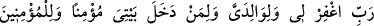
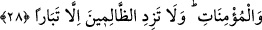

namazında şu âyeti okumuştur: “Eğer kendilerine azap edersen şüphesiz onlar senin
kullarındır (dilediğini yaparsın); eğer onları bağışlarsan şüphesiz sen izzet ve
hikmet sâhibisin.” (el-Mâide, 5/118) [128] Bu âyetin üzerine başka bir şey ilave
etmiyordu. Peygamber Efendimiz’in bu hâli nerede, bundan önce Rı’l, Zekvân, Usayye
kabileleriyle “Allah’ım filancayı Sana havâle ettim, ya Rabbi filancayı Sana havâle
ettim” diye Kureyş’in ileri gelenlerine yaptığı bedduâ nerede! O hâlde bunu bil ve bu
hususta Peygamberine ittibâ et! Hidâyet Allah’tandır.
Mârifet ehlinden biri şöyle der: “Hz. Nûh (a.s.), kavminden incindiğinde onların helâk
olmaları için bedduâ etti. Mustafâ (s.a.) ise kavminden incindiğinde şefkatle: “Allah’ım,
kavmimi hidâyet eyle! Zira onlar bilmiyorlar.” buyurdu.
Şunu bil ki; belli bir kâfire bedduâ etmek câiz değildir. Çünkü biz onun sonunun nasıl
olacağını bilmiyoruz. Ancak mutlak anlamda kâfirlere, fâcirlere bedduâ edilebilir.
Peygamber Efendimiz (s.a.), toplanıp mü’minlerin üzerine gelen kabilelere bedduâ
etmiştir.[129] İşte kâfirlere yapılacak bedduâda esas kâide budur.
28. «Rabbim! Beni, ana-babamı, îman etmiş olarak evime girenleri, îman eden
erkekleri ve îman eden kadınları bağışla, zâlimlerin de ancak helâkini arttır.»
“Ey Rabbim beni” günahlarımı -ki onlar evlâ olanı terk şeklinde sâdır olanlardı-,
“anamı, babamı” yâni onların günahlarını “mümin olarak evime girenleri” bana ya da
Âdem’den kıyâmet gününe kadar “îman eden erkekleri ve îman eden kadınları bağışla,
zâlimlerin de ancak helâklerini arttır.”
Nûh (a.s.)’ın babasının adı Melik b. Müteveşlih ya da Melik b. Müttûşelh idi.
Bâzıları ise Medduşelh şeklinde olduğunu söylerler. Annesinin adı ise Semha b. Anuş
idi, Nûh’un annesi ile babası mümin idiler. İbn Abbas (r.a.) der ki: Nûh’un Âdem’den
kendisine kadar babaları arasında kâfir olan hiç kimse yoktu.
İşrâku’t-tevârîh isimli eserde der ki: Nûh’un annesi Kasûs binti Kabil idi.
Keşfu’l-esrar’da ifâde edildiğine göre Nûh’un annesinin adı Heycel binti Lâmûs İbn
Müteveşlih idi. Dolayısıyla Nûh’un annesi babasıyla amca çocukları oluyorlardı. Bu
ikisi İdris (a.s.)’ın dini üzere müslüman idiler. Bâzıları âyette yer alan “anamı-babamı”
ifâdesinden maksadın Âdem ile Havvâ olduğunu söylemişlerdir.
“Mümin olarak evime girenler” ifâdesinden maksad evime girenler olduğu gibi
bâzılarına göre mescidime girenler, demektir. Çünkü mescid her ne kadar bir yönden
Allah’ın evi ise de aynı zamanda ehlullahın evidir. Bâzı âlimlere göre âyetin mânâsı
“Benim gemime mümin olarak girenleri bağışla” şeklindedir. Çünkü Nûh’un gemisi her
türlü ihtiyacı bulundurma, insanları soğuktan, sıcaktan vb. şeylerden koruma açısından